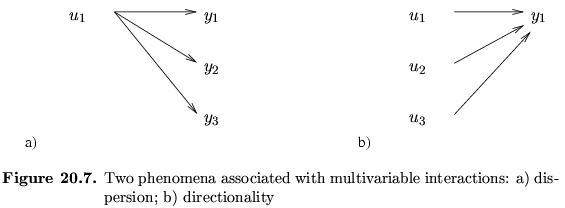
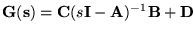
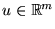
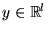
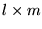
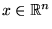
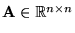
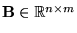
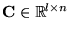
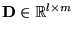

|
You are here : Control
System Design - Index | Book Contents |
Chapter 20
20. Analysis of MIMO Control loops
Preview
In previous chapters we have focused on single-input, single-output
problems. Other signals in the control loop have been considered as
disturbances. However it frequently happens that what we have designated
as disturbances in a given control loop, are signals originating in
other loops, and vice-versa. This phenomenon is known as interaction or
coupling. In some cases, interaction can be
ignored, either because the coupling signals are weak or because a clear
time scale or, frequency scale separation exists. However, in other
cases it may be necessary to consider all signals simultaneously. This
leads us to consider multi-input multi-output (or MIMO) architectures.
A useful way to describe and refer to the problem of interaction is
to borrow models and terminology from communication theory. If we assume
that a MIMO system is square (same number of inputs and outputs), all
inputs and outputs in the system can be paired. Then, the question of
controlling every output yi(t), via
manipulation of an input ui(t), in the
presence of interactions, is similar to a communication channel,
where interactions can be represented as channel crosstalk.
The idea can be extended to any square MIMO system, including complete
control loops, where the transmitter is, say reference ri(k),
and the receiver is output yi(k).
Throughout this chapter we will adhere to the convention used in the
rest of the book, to use boldface type to denote matrices.
Summary
- In previous chapters we have considered the problem of controlling
a single output by manipulating a single input (SISO).
- Many control problems, however, require that multiple outputs be
controlled simultaneously; and to do so, multiple inputs must be
manipulated -usually subtly orchestrated (MIMO):
- Aircraft autopilot example: speed, altitude, pitch, roll and
yaw angles must be maintained and; throttle, several rudders and
flaps are available as control variables.
- Chemical process example: yield, and throughput must be
regulated and; thermal energy, valve actuators and various
utilities are available as control variables.
- The key difficulty in achieving the necessary orchestration of
input is due to multivariable interactions, also known as coupling.
- From an input-output point of view, two fundamental phenomena
arise from coupling (see Figure 20.7):
- a single input affects several outputs: dispersion.
- several inputs affect a single output: directionality.

- Multivariable interactions in the form of dispersion and
directionality add substantial complexity to MIMO control.
- There are several ways to quantify interactions in multivariable
systems, including their structure and their strength.
- Interactions can have a completely general structure (every
input potentially affects every output) or display a particular
patterns such as triangular or dominant diagonal;
they can also display frequency-dependent patterns such as being
statically decoupled or band-decoupled.
- The lower the strength of interaction, the more a system
behaves like a set of independent systems which can be analyzed
and controlled separately.
- Weak coupling can occur due to the nature of the interacting
dynamics, or due to a separation in frequency range or time
scale.
- The stronger the interaction, the more it becomes important to
view the multiple-input multiple-output system and its
interactions as a whole.
- Compared to the SISO techniques discussed so far, viewing the
MIMO systems and its interactions as whole requires generalized
synthesis and design techniques and insight. These are the
topics of the following two chapters.
- Both state space and transfer function models can be generalized
to MIMO models.
- The MIMO transfer function matrix can be obtained from a state
space model by .
- In general, if the model has m inputs,
,
and l outputs,
,
then:
- the transfer function matrix consists of an  matrix of SISO transfer functions.
- for an n-dimensional state vector,
,
the state space model matrices have dimensions
,
,
,
.
- Some MIMO model properties and analysis results generalize quite
straightforwardly from SISO theory:
- similarity transformations among state space realizations
- observability and controllability
- poles
- Other MIMO properties, usually due to dispersion, directionality
and the fact that matrices do not commute, are more subtle or
complex than their SISO counterpart, e.g.
- zeros
- left and right matrix fractions.
|